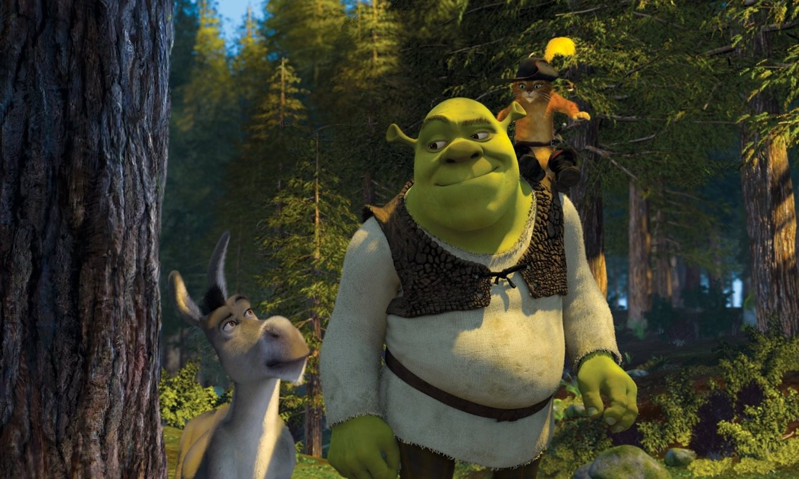
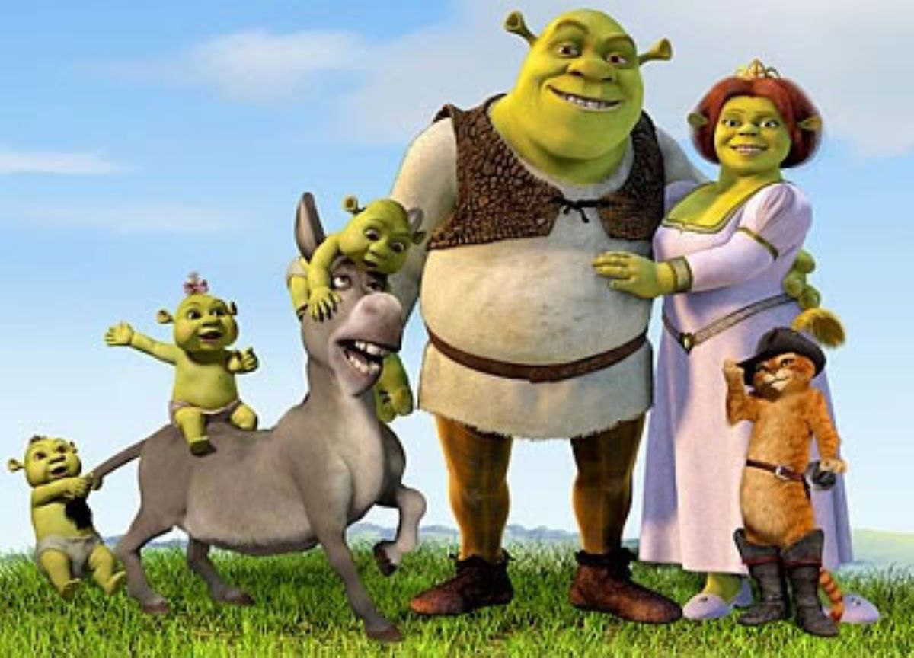
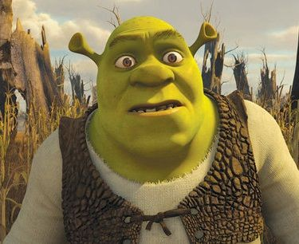

Shrek é um ogro rabugento e nada sociável que se sê com um problema enorme todas criaturas de contos de fadas foram despejadas no pântano onde vive. Determinado a tirá-las dali e voltar a viver em paz, ele fez um trato com o príncipe do reino, que por sua vez precisa de alguém bruto e forte para resgatar a princesa Fiona,com quem o monarca pretende se casar para virar rei. Porém a moça está guardada em uma torre por um dragão feroz. Se conseguir trazer a princesa, Sherk terá suas terras de volta. Assim, ele logo parte em sua missão, mas não sem a companhia de um inconveniente burro falante.s
Poderia ter dado tudo errado. Uma animação que debocha do primeiro ao último minuto de todos os estereótipos propagandas pela Disney desde o início de seus longas-metragens nos anos 1930, estrelado por um personagem feio e irritado e com um roteiro que até tem escatologia no meio. Pois o primeiro Shrek não foi apenas um grande sucesso de público e crítica como também a primeira produção a ganhar o Oscar de Melhor Animação, categoria criada no início dos anos 2000 para suprir a necessidade de elogiar o gênero, tão relegado e segundo plano em premiações.
Assim conhecemos a história do ogro do título, um ser temido por todos, não apenas pela feíura, mas também por ser conhecido como do mal e comedor de criancinhas. Pois ele é o único que tem coragem o suficiente para enfrentar um dragão e resgatar uma princesa adormecida.

Desenvolvido por Danyllo Ribeiro ©